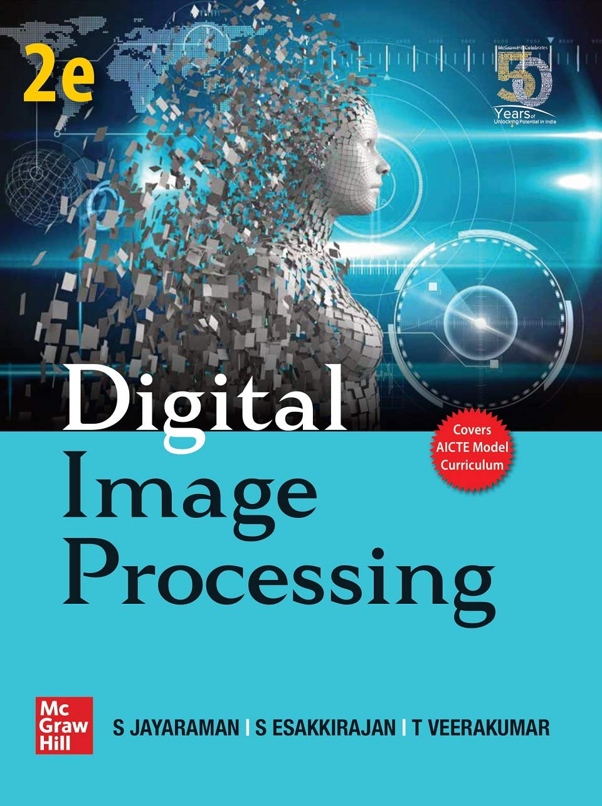
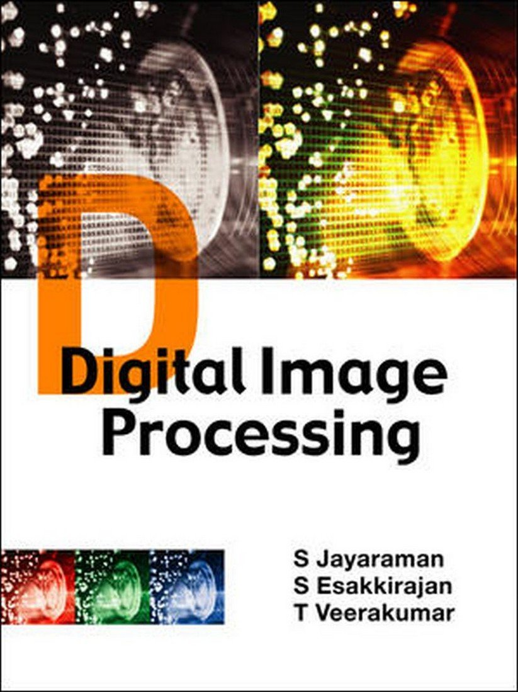
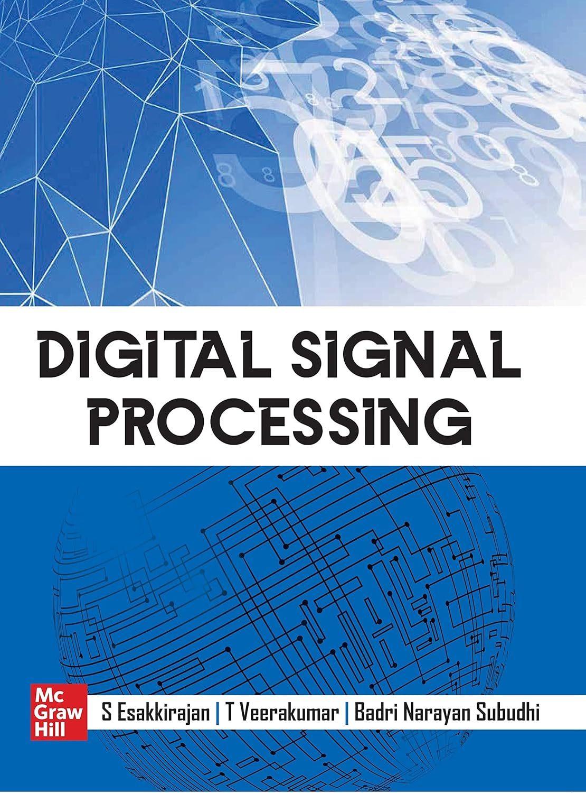
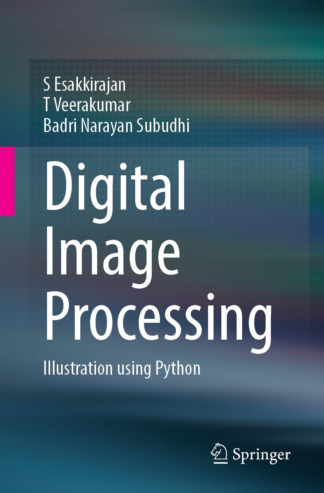
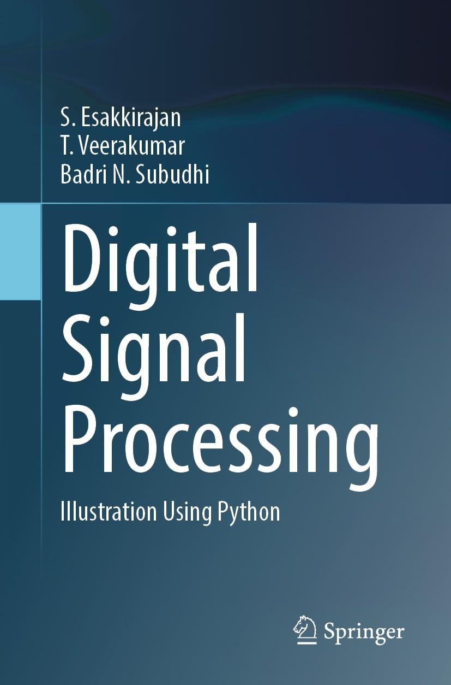

Professor of Instrumentation & Control Engineering
PSG College of Technology, Coimbatore
I am a dedicated Professor in the Department of Instrumentation & Control Systems Engineering at PSG College of Technology, Coimbatore, where I have been a faculty member since 2004.
My research focuses on Digital Image Processing, Computer Vision, and Machine Learning applied to real-world problems. I have collaborated with over 111 international co-authors, published in leading IEEE, Elsevier, Springer, and IET journals, and guided 4 PhD scholars to completion.
"I remain grateful to my mentors Dr. N. Malmurugan and Dr. R. Sudhakar, who grounded me in the fundamentals of digital signal and image processing."

Focuses on the latest trends in image and video processing. Contains video processing chapter, MATLAB simulation, solved problems, and rich bank of objective questions.
🛒 View on Amazon
A clear, comprehensive, and up-to-date introduction to Digital Image Processing in a pragmatic style with illustrative approaches and MATLAB applications.
🛒 View on AmazonProvides comprehensive coverage of database management systems fundamentals. Essential for understanding relational data modeling, its purpose, nature, and standards.
🛒 View on Amazon
Comprehensive textbook covering basic and advanced concepts of signal processing. Includes time-frequency representation, step-by-step derivations, and MATLAB examples.
🛒 View on Amazon
A practical guide to digital image processing using Python, presenting fundamental concepts, techniques, and algorithms with illustrative examples.
🛒 View on Amazon
Focuses on developing signal processing algorithms using Python. Open-source friendly, includes prelab questions, exercises, and objective questions.
🛒 View on AmazonNotable students recognised for their contributions: